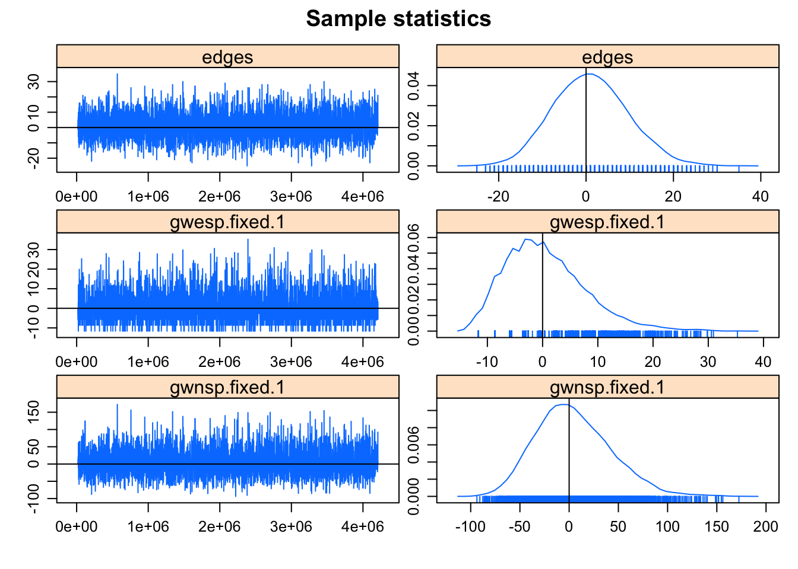

Chapter 5 Maximum likelihood estimation for ERGMs
The estimation procedure starts assuming that the observed network \(y\) is just one realization of a set of many possible networks that could have been formed by the same underlying structural processes. Each network statistic \(s(y)\) is conceptualised as having a particular probability of occurring which is incorporated into the model as a parameter vector \(\theta\).
The aim of the estimation is to find accurately a parameter value so that the observed network has the highest possible likelihood of being simulated by the given model. In other words, when attempting to generate an ERGM we find the set of parameters which maximise the probability that any random network graph generated by simulating from the ERGM will be identical to the observed network in terms of network statistics: \[\begin{equation*} \mathbb{E}_{y\ |\ \theta}\left[s(y)\right] = s(y) \end{equation*}\]where \(\mathbb{E}_{y\ |\ \theta}\) is the expectation under the likelihood distribution \(p(y\ |\ \theta)\) so that it ensures that the probability mass of the ERGM is centred at \(s(y)\).
In practice, an exact solution for the ERGM is actually impossible to calculate directly due to the intractability of the normalising constant \(c(\theta)\).
5.1 Monte Carlo maximum likelihood estimation (MC-MLE)
The most advanced classical estimation method used is the Monte Carlo Maximum Likelihood Estimation (MC-MLE) procedure proposed by Geyer and Thompson (1992).
This involves the simulation of a set of random networks from a starting set of estimated parameter values \(\theta_0\), and then the progressive refinement (until convergence) of the parameter values by measuring how closely these networks match the observed network.
Let’s denote with \(q_{\theta}(y) = \exp\{ \theta^t s(y) \}\) the unnormalised likelihood. Mathematically, the key identity of the MC-MLE method is the following: \[\begin{align} \frac {c(\theta)} {c(\theta_0)} = \mathbb{E}_{y\ |\ \theta_0} \left[ \frac {q_{\theta}(y)} {q_{\theta_0}(y)} \right] &= \sum_{y} \frac {q_{\theta}(y)} {q_{\theta_0}(y)} \frac {q_{\theta_0}(y)} {z(\theta_0)} \label{eqn:key} \\ &\approx \frac{1}{m}\sum_{i=1}^m \exp\left\{ (\theta-\theta_0)^t s(y_i) \right\}\notag \end{align}\]where \(q(\cdot)\) is the unnormalised likelihood, \(\theta_0\) is fixed set of parameter values, and \(\mathbb{E}_{y\ |\ \theta_0}\) denotes an expectation taken with respect to the distribution \(p(y\ |\ \theta_0)\). In practice this ratio of normalising constants is approximated using graphs \(y_1,\dots,y_m\) sampled via MCMC from \(p(y\ |\ \theta_0)\) and importance sampling.
This yields the following approximated log likelihood ratio: \[\begin{equation} w_{\theta_0}(\theta)=\ell(\theta)-\ell(\theta_0) \approx (\theta - \theta_0)^t s(y) - \log\left[ \frac{1}{m}\sum_{i=1}^m \exp\left\{ (\theta-\theta_0)^t s(y_i) \right\} \right] \label{eqn:gey:thom} \end{equation}\]where \(\ell(\cdot)\) is the log-likelihood. \(w_{\theta_0}\) is a function of \(\theta\), and its maximum value serves as a Monte Carlo estimate of the MLE.
A crucial aspect of this algorithm is the choice of \(\theta_0\). Ideally \(\theta_0\) should be very close to the maximum likelihood estimator of \(\theta\). Viewed as a function of \(\theta\), \(w_{\theta_0}(\theta)\) is very sensitive to the choice of \(\theta_0\). A poorly chosen value of \(\theta_0\) may lead to an objective function that cannot even be maximised.
The result of the MC-MLE procedure is a set of estimated parameter values and relative standard errors which measure the degree of accuracy and significance of the estimates.
To implement the MC-MLE procedure we can use the ergm function:
set.seed(11)
model.2 <- y ~ edges +
gwesp(decay = 1, fixed = TRUE) +
gwnsp(decay = 1, fixed = TRUE)
MLE.2 <- ergm(model.2)## Starting maximum likelihood estimation via MCMLE:
## Iteration 1 of at most 20:
## The log-likelihood improved by 0.004112
## Step length converged once. Increasing MCMC sample size.
## Iteration 2 of at most 20:
## The log-likelihood improved by 0.0082
## Step length converged twice. Stopping.
## Evaluating log-likelihood at the estimate. Using 20 bridges: 1 2 3 4 5 6 7 8 9 10 11 12 13 14 15 16 17 18 19 20 .
##
## This model was fit using MCMC. To examine model diagnostics and check for degeneracy, use the mcmc.diagnostics() function.summary(MLE.2)##
## ==========================
## Summary of model fit
## ==========================
##
## Formula: y ~ edges + gwesp(decay = 1, fixed = TRUE) + gwnsp(decay = 1,
## fixed = TRUE)
##
## Iterations: 2 out of 20
##
## Monte Carlo MLE Results:
## Estimate Std. Error MCMC % p-value
## edges -3.126974 0.414423 0 <1e-04 ***
## gwesp.fixed.1 0.194962 0.179318 0 0.277
## gwnsp.fixed.1 0.004851 0.089213 0 0.957
## ---
## Signif. codes: 0 '***' 0.001 '**' 0.01 '*' 0.05 '.' 0.1 ' ' 1
##
## Null Deviance: 1910 on 1378 degrees of freedom
## Residual Deviance: 517 on 1375 degrees of freedom
##
## AIC: 523 BIC: 538.6 (Smaller is better.)mcmc.diagnostics(MLE.2)## Sample statistics summary:
##
## Iterations = 16384:4209664
## Thinning interval = 1024
## Number of chains = 1
## Sample size per chain = 4096
##
## 1. Empirical mean and standard deviation for each variable,
## plus standard error of the mean:
##
## Mean SD Naive SE Time-series SE
## edges 1.0830 8.514 0.1330 0.1265
## gwesp.fixed.1 0.5493 7.271 0.1136 0.1136
## gwnsp.fixed.1 4.4974 38.127 0.5957 0.5957
##
## 2. Quantiles for each variable:
##
## 2.5% 25% 50% 75% 97.5%
## edges -15.00 -5.000 1.000e+00 7.000 18.00
## gwesp.fixed.1 -11.63 -5.632 3.451e-13 5.264 17.26
## gwnsp.fixed.1 -60.49 -22.240 8.964e-01 28.528 85.71
##
##
## Sample statistics cross-correlations:
## edges gwesp.fixed.1 gwnsp.fixed.1
## edges 1.0000000 0.6410327 0.9557442
## gwesp.fixed.1 0.6410327 1.0000000 0.6050813
## gwnsp.fixed.1 0.9557442 0.6050813 1.0000000
##
## Sample statistics auto-correlation:
## Chain 1
## edges gwesp.fixed.1 gwnsp.fixed.1
## Lag 0 1.000000000 1.000000000 1.000000e+00
## Lag 1024 0.003546387 0.020586964 3.443736e-05
## Lag 2048 -0.021609688 -0.007190510 -2.622667e-02
## Lag 3072 -0.032834876 0.007026375 -2.331004e-02
## Lag 4096 -0.013443575 -0.009443708 -1.369215e-02
## Lag 5120 0.008690002 -0.010584478 1.835021e-02
##
## Sample statistics burn-in diagnostic (Geweke):
## Chain 1
##
## Fraction in 1st window = 0.1
## Fraction in 2nd window = 0.5
##
## edges gwesp.fixed.1 gwnsp.fixed.1
## -1.7545 -0.9937 -2.2127
##
## Individual P-values (lower = worse):
## edges gwesp.fixed.1 gwnsp.fixed.1
## 0.07934137 0.32037506 0.02691517
## Joint P-value (lower = worse): 0.1506554 .
##
## MCMC diagnostics shown here are from the last round of simulation, prior to computation of final parameter estimates. Because the final estimates are refinements of those used for this simulation run, these diagnostics may understate model performance. To directly assess the performance of the final model on in-model statistics, please use the GOF command: gof(ergmFitObject, GOF=~model).5.2 Goodness of fit diagnostics
If the estimated ERGM is a good fit to the observed data, then networks simulated \(y_1, \dots, y_m\) from its MLE should resemble the connectivity structure of the observed data \(y\).
To do this, \(m = 100\) graphs are simulated from the maximum likelihood estimate of the parameter vector \(\hat{\theta}\) and compared to the observed graph in terms of high-level network statistics which are not modelled explicitly:
model.2.gof <- gof(MLE.2 ~ degree + esp + distance,
control.gof.formula(nsim = 100))5.2.1 Graphical diagnostics
par(mfrow = c(1, 3))
plot(model.2.gof, main = '')
5.2.2 Summaries
summary(model.2.gof)##
## Goodness-of-fit for degree
##
## obs min mean max MC p-value
## 0 5 0 4.79 10 1.00
## 1 9 4 11.80 22 0.42
## 2 16 5 14.10 22 0.72
## 3 14 5 10.95 20 0.36
## 4 5 1 6.46 12 0.70
## 5 2 0 2.68 10 1.00
## 6 0 0 1.53 7 0.44
## 7 1 0 0.48 2 0.74
## 8 1 0 0.13 2 0.22
## 9 0 0 0.07 1 1.00
## 10 0 0 0.01 1 1.00
##
## Goodness-of-fit for edgewise shared partner
##
## obs min mean max MC p-value
## esp0 53 35 52.57 76 0.96
## esp1 10 0 9.61 29 0.82
## esp2 1 0 0.97 8 0.86
## esp3 0 0 0.05 1 1.00
##
## Goodness-of-fit for minimum geodesic distance
##
## obs min mean max MC p-value
## 1 64 43 63.20 86 0.96
## 2 136 55 132.85 234 0.88
## 3 219 63 213.89 385 0.86
## 4 257 68 239.57 383 0.90
## 5 215 59 185.51 269 0.58
## 6 140 20 109.02 197 0.42
## 7 68 0 57.13 133 0.72
## 8 22 0 28.33 109 1.00
## 9 5 0 14.27 86 0.92
## 10 2 0 6.77 68 0.92
## 11 0 0 3.15 44 1.00
## 12 0 0 1.38 22 1.00
## 13 0 0 0.40 9 1.00
## 14 0 0 0.06 2 1.00
## Inf 250 52 322.47 931 0.84